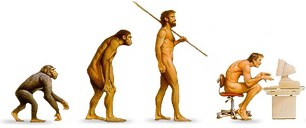

Choicy Original Downloads
Download Choicy for free, whiout any hidden chares or other tirkcy stuff...
Application
The latest version of the Choicy is compatible with Windows 7, 8, and 10. Click on Download Now below to get it for free.
The Source
If you are interested in the details about how Choicy is made, download the complete project inclusive source code as ZIP File or TAR Ball. Choicy is open source and the source code can be viewed or downloaded on...

Of course you are also very welcome to fork Choicy on GitHub and contribute to the program.
Release History

Each release contains also minor bug fixes and improvements, which are not explicitly mentioned here...
Release 0.1.0 2016-07-08
That's the first Choicy release to create a stable point on GitHub.